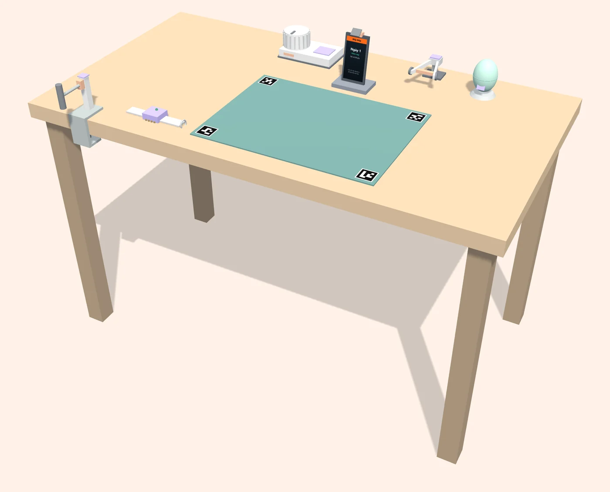

🥚
Trứng bóp
Load cell giữa hai nửa vỏ cứng, bọc nhựa dẻo. Đo lực nắm cả bàn tay, 0–100 kg.
Bốp Bốp là bộ dụng cụ tập tay có số đo và trò chơi. Mỗi buổi tập tự gửi kết quả cho người nhà và chuyên viên, nên người bệnh ở nhà vẫn có người đồng hành.

Mỗi dụng cụ có một chỗ gắn lõi. Lõi đọc số đo và gửi về điện thoại; điện thoại vừa là màn hình trò chơi vừa là camera.
Load cell giữa hai nửa vỏ cứng, bọc nhựa dẻo. Đo lực nắm cả bàn tay, 0–100 kg.
Hai càng chữ V với load cell 20 kg. Đo lực kẹp của 2–3 ngón.
Cảm biến góc từ tính AS5600 và nam châm. Đo góc sấp, góc ngửa cẳng tay.
Load cell chữ S kẹp vào mép bàn. Đo lực kéo, lực đẩy 0–50 kg.
Mạch đọc HX711, ESP32 có Bluetooth, chip chuyển động MPU6050, pin, chân nối nam châm và dây đeo. Gắn vào dụng cụ, hoặc đeo cổ tay để đo góc nâng tay, co duỗi khuỷu.
Bốn góc thảm có mã hình để app tự biết thảm nằm đâu. Đo vị trí đồ vật, tầm với, độ mở bàn tay.
Giữ điện thoại cố định ở mép thảm. Camera trước nhìn xuống thảm qua kẹp gương, màn hình vẫn quay về người tập.
Tập đủ 9 bài, nhấn mạnh bài 4, 5, 6, 9: mở nắm bàn tay, bóp bóng, kẹp và thả vật, thả lực nhanh.
Sau tháo bột chỉ tập bài 4, 7, 8. Khi bác sĩ cho phép tập lực thì mở thêm bài 3, 5, 6.
7 trò chơi tự do: Đo lực, Chim bay, Hái táo, Lái xe, Kéo co, Mở nắm tay, Đi chợ. Chơi cho vui, không tính vào buổi tập.
Không tập hôm nay.
Dừng buổi tập ngay.
Màn hình đỏ “Gọi cấp cứu 115”.
Nhắc dừng tập và đi khám.
Người đột quỵ chỉ nâng tới ngang vai cho tới khi chuyên viên mở khoá.
Người chấn thương chỉ tập lực khi bác sĩ cho phép, có giới hạn lực tối đa mỗi tuần.
Mỗi lần khoá hoặc dừng đều tạo cảnh báo gửi sang Web theo dõi. App chỉ đề xuất lên hoặc xuống mức; chuyên viên duyệt.
Bố vừa tập xong, con ở chỗ làm nhận được ngay: bố tập mấy bài, đau ra sao, bài nào cần chú ý. Chuyên viên xem số đo, duyệt mức tập mới và nhắn lại cho cả nhà.